Designable is Ruggable's AI rug recommender. The team started thinking it was a chat
experience, then a form. Through three production versions and a steady habit of cutting
things, the version that shipped is just a photo upload. The customer drops a picture
of their room, the AI does the rest, and a curated set of rug picks comes back in
seconds. There's a retry button for a fresh take on the same image. I led UX from
ideation through ship.
RolePrincipal UX Designer · Lead
CompanyRuggable
PlatformWeb
Status● Shipped · 2024
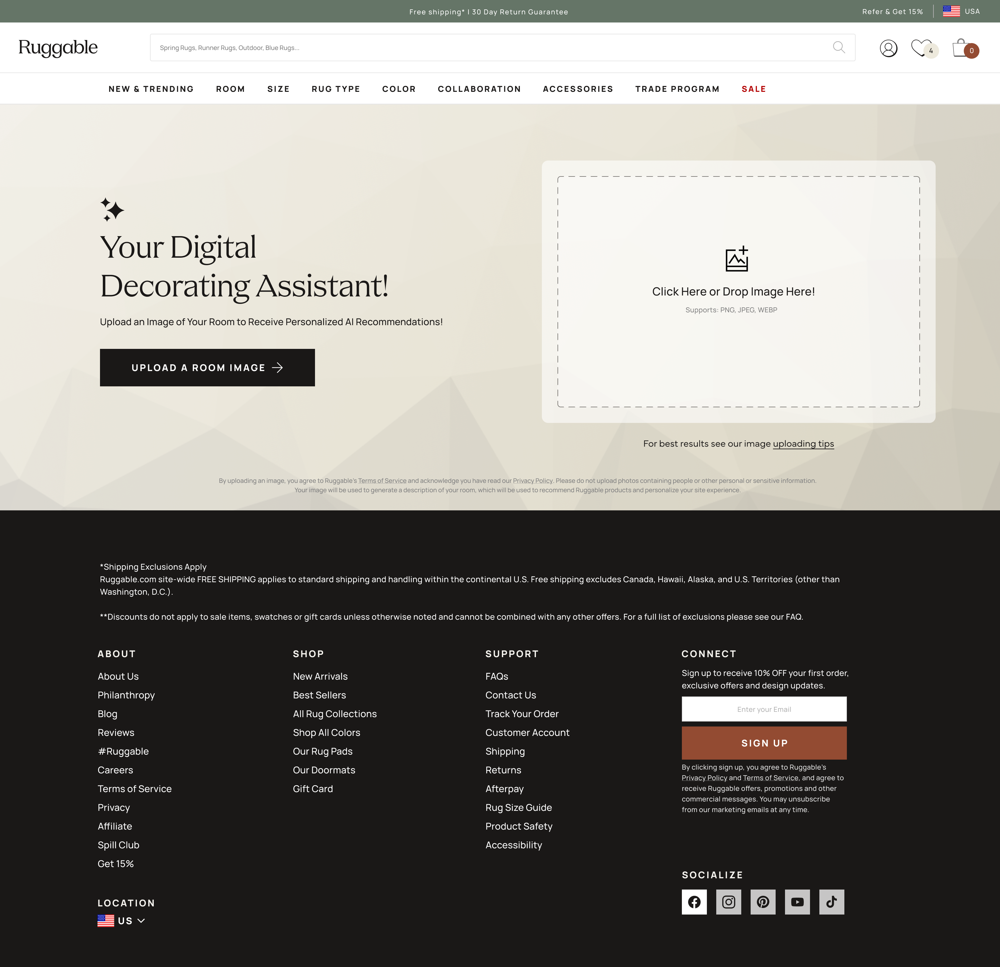
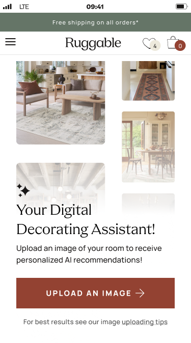
14%Conversion rate on Designable sessions
>QuizBeats the existing Rug Quiz
3xProduction versions shipped to date
2024Launched without full marketing push
01 · The problem
Choosing a rug is a confidence problem.
Ruggable customers buy a rug they're going to see every day. The rug isn't the
decision, the room is. "Will this work in my space" is the question they actually
want answered, and the existing Rug Quiz wasn't getting them there. People completed
it, got a list back, then bounced to PDPs and second-guessed their way out of the
purchase.
The PM team framed it directly in the project brief: customers want to feel confident
they made the right choice on something they'll see every day. The product needed to
do what the catalog couldn't. Read the room (literally), narrow the field, and hand
back a small set of picks the customer believed in.
What we wanted but didn't ship
Rendering the recommended rug into the customer's uploaded photo. The team was clear
we'd pursue it eventually; it would close the visual loop and answer "will it look
right" directly. Budget, timeline, and the conversion case to justify the build
weren't there for this round, so the visualization stayed in the backlog and we
shipped without it.
02 · The chatbot premise
The team's first instinct was chat.
The initial framing came in as: "friendly interior designer in a chat window."
Recognizable shape, low cognitive cost, conversational. Open the box, type a
question, get advice back. Generative AI was good enough by mid-2023 to make the
premise plausible and a chatbot UI didn't need a new mental model.
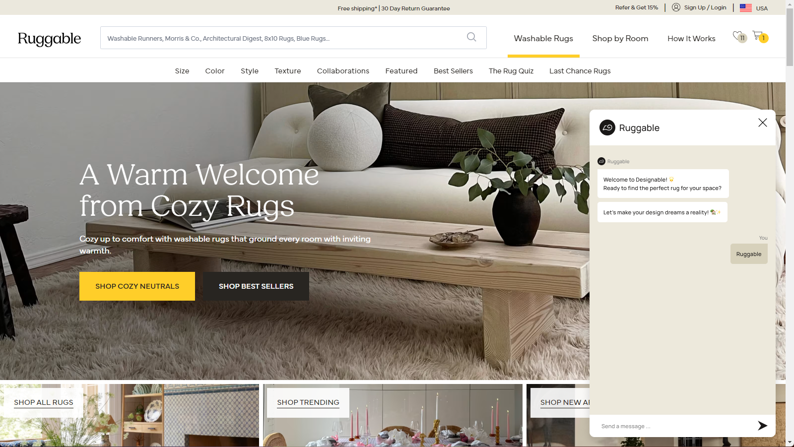
The chatbot panel, open. A "designer in a chat window" framing: free-form prompt, conversational back-and-forth.
Working through ideation, I built a few low-fi flows for the
chatbot version. Each one ran into the same problem: the conversation didn't
actually shorten the path to a recommendation. People didn't know what to type, the
model didn't know what to ask back, and the back-and-forth was stretching out a
decision the customer wanted to land on quickly. A chat window is a good shape for
exploration. It's a bad shape for a five-minute purchase.
03 · The form pivot
Trade the chat for structured inputs.
The pivot, after a couple of ideation rounds, was treating the interaction as a
structured form with AI behind the curtain, not a free-form chat with AI as the
partner. The first form had a photo upload, a tag list of style and color options,
and an open text box for whatever the customer wanted to add. The model still did the
heavy lifting on reading the room, matching aesthetic, and narrowing the catalog. It
just stopped asking the customer to drive.
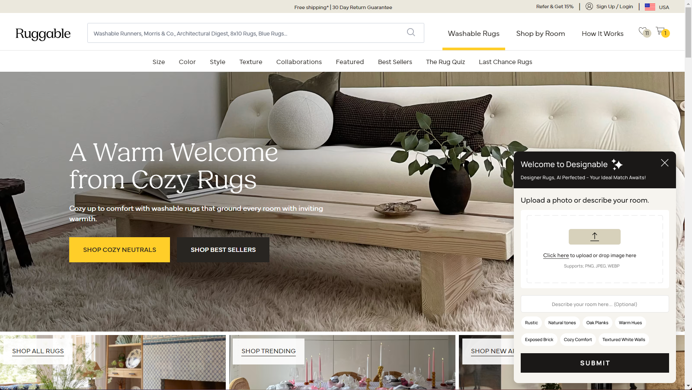
The form variant of the panel. Structured inputs and a photo upload replaced the chat window.04 · Out of the widget
Off the launcher. Onto its own page.
Before the next round of cuts, Designable moved out of a launcher panel docked to
other pages and onto its own dedicated URL. Up to that point, customers reached the
tool by clicking a launcher on the landing page or a PDP, and the experience always
lived inside a panel attached to whatever page was underneath it. Putting it on its
own page changed what the tool could do.
The biggest unlock was sharing. With a real URL, a customer could send a friend a
link to the tool, or a link to their results for a second opinion. It also gave the
experience room to design for itself instead of around the page below it. Full-bleed
upload state, generous results layout, and a retry button that didn't feel cramped.
05 · The cuts
Each version removed something.
The form pivot wasn't the end of the story. It was the start. Across three production
versions, the consistent direction was: cut more, ask less, trust the model with the
photo and let it work. The version that shipped is barely a form at all. Each round,
we found that what we thought was helpful structure was actually noise the model
didn't need and the customer didn't want to fill out.
v1 · MVP
The widget. The most stuff.
A launcher panel with three inputs: photo upload, a tag list of style and color options, and an optional description text box for the customer's ideal room. Internal release first, then live. The point was to get real usage data, not to ship every idea on the whiteboard. Real usage proved the most-stuff version was the most fragile.
v2 · Cut the text. Tags became opt-in.
Drop the text box. Move tags to a second screen.
Early data and user testing flagged the freeform text box as the noisiest input. People didn't know what to type, and what they typed pulled the model in directions the catalog couldn't follow. We pulled the text out, used the move to a dedicated page to give the upload more room, and turned tags into an optional second step (the customer hits "Add tags" if they want to nudge the result; otherwise the photo runs as-is). Results split into Your Matches and You May Also Like.
v3 · Cut the form
Just the photo. Plus a retry button.
The tags went next. Testing kept showing customers who skipped the optional tags got recommendations roughly as good as customers who used them, and the act of asking was costing more attention than the inputs were earning. We cut everything except the photo upload, added a retry button so the customer could roll for a fresh set of picks on the same image, and let the model do the rest. Eng upgraded the model alongside (Will Congbalay leading, Thomas Huynh on iteration), and the landing page got "how it works" image previews so customers knew what to expect from a one-step experience.
v1 · MVP (widget)
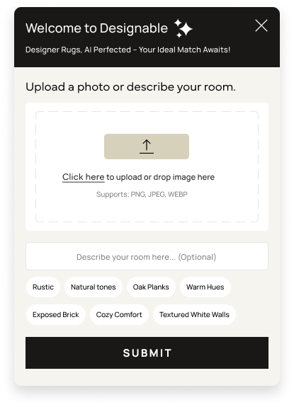
v2 · Tags became opt-in
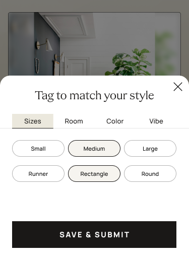
v3 · Just the photo
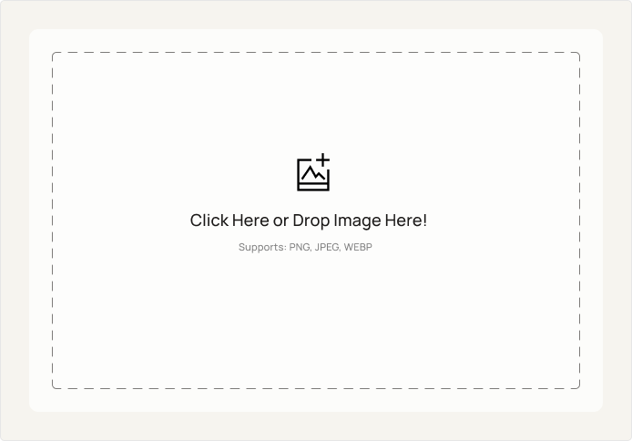
Three production versions, side by side. Each one cut something the previous version asked the customer to fill out.
How we knew to keep cutting
Heap analytics told us where customers were dropping off. To understand why, I set up
two rounds of usertesting.com studies alongside the quantitative data, with focused
questions for each phase:
v1 study. Do users trust the rugs the AI recommends? Have participants run the tool a few times to gauge satisfaction across runs, and gather open feedback on the design.
v2 study. Evaluate the impact of the v2 updates specifically (the AI's description copy and the recommended rug presentation). Measure satisfaction with the recommendations, and gather feedback to inform v3.
Feedback summary
I wrote up the qualitative themes from each study in a separate doc on our shared
drive. I'm pulling that doc back to fold specific quotes and the "what users said"
patterns into this writeup when I have access.
06 · What shipped
Upload a photo. Retry for more.
The shipped experience is one screen. Drop a photo of your room. Wait a few seconds
while the model reads the space and matches against the catalog. Get a curated set of
rug picks with direct links to the PDPs. If the picks aren't right, hit retry, and
the same photo runs again for a fresh set.
01 · Upload
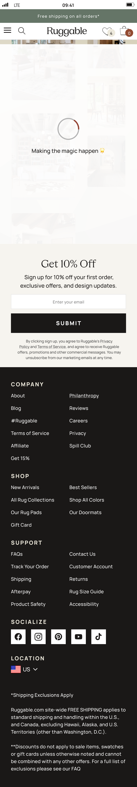
02 · Processing
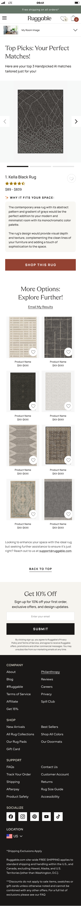
03 · Results
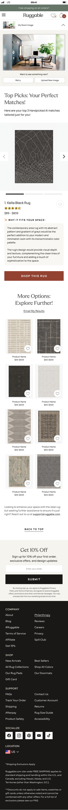
04 · Expanded
Four beats, top to bottom. Upload, wait, results, expand any pick. The expanded view is where retry and "upload a new image" live: same photo for a fresh set, or swap photos to start over.
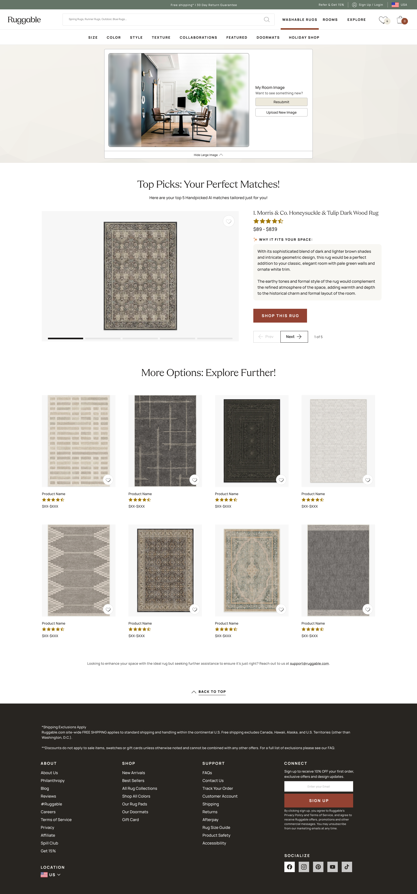
Same flow, desktop. Expanded detail view of a recommended rug: full rug imagery, attribution back to the PDP, and a direct path to buy.
The retry button earned its place specifically. AI recommendations are
non-deterministic; the same photo runs return slightly different picks each time.
Earlier versions tried to hide that with caching and consistency tricks. v3 leaned
into it. Retry isn't an error recovery, it's the feature: each click is a fresh angle
on the same room.
What's under the hood
My job was the experience, not the engineering, but the system constrained the UX in
ways worth naming. Eng (Will Congbalay leading, Thomas Huynh on iteration and bug
fixes) wired the flow to OpenAI's vision model for reading the uploaded photo,
GPT-3.5 Turbo for processing prompts, and Shopify Semantic Search for matching
against the live catalog. Heap captured the interaction events for later analysis.
The instinct was to add: more inputs, more options, more guidance. The data kept telling us the opposite. v2 cut the text box. v3 cut the rest. The design got better as the form got smaller. The shipped version is barely a form at all, and that's the whole point.
What I'd change
Trust the model sooner.
The selectors stayed in v1 and v2 because we wanted to give the customer agency over the result. The data showed customers either skipped the selectors or got slightly worse recommendations when they used them. If I'd run the "just the photo" cut earlier, we'd have shipped the right version sooner.
Open question
Where does AI sit on the site?
Designable is its own surface today. The next question is whether the same intelligence belongs inside the PDP, the PLP, or wherever a customer is stuck. Embedding the recommender into existing flows is a bigger UX problem than building it standalone.
What's next
14% says it works. Now scale it.
Designable sessions hit a 14% conversion rate and outperformed both the Rug Quiz and non-Designable sessions, with the marketing push still ahead of it. The next question is reach: how do we get more of the audience into the tool, and where else does the same intelligence belong (PDP, PLP, post-purchase). The hard part was always going to be the result. We have it.
Next case study
Ruggable · 2024 · PDP
PDP Drawer. Picking a size shouldn't feel like guessing.
Moved size and system selection into a right-side drawer to clear above-the-fold
clutter and open room for richer guidance. A/B-validated on Flatwoven and Tufted
desktop, then expanded across the catalog.